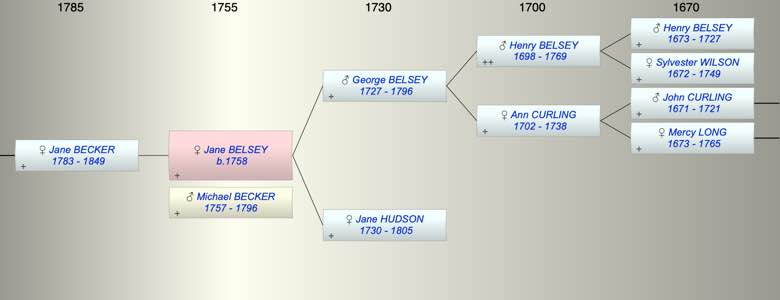

| [Index] |
| Jane BELSEY (1758 - ) |
|  |
| b. 1758 |
| +. Michael BECKER (1757 - 1796) |
| Parents: |
| George BELSEY (1727 - 1796) |
| Jane HUDSON (1730 - 1805) |
| Children (1): |
| Jane BECKER (1783 - 1849) |
| Events in Jane BELSEY (1758 - )'s life | |||||
| Date | Age | Event | Place | Notes | Src |
| 1758 | Jane BELSEY was born | Note 1 | |||
| 1783 | 25 | Birth of daughter Jane BECKER | |||
| 1796 | 38 | Death of father George BELSEY (aged 69) | |||
| 1796 | 38 | Death of husband Michael BECKER (aged 39) | |||
| 1805 | 47 | Death of mother Jane HUDSON (aged 75) | |||
| 1849 | 91 | Death of daughter Jane BECKER (aged 66) | |||
| Note 1: bap 5 Feb 1758 Capel-le-Ferne, Kent ex LAC |
| Personal Notes: |
|
married Michael 2 Beccker 1778 at Hougham Kent
their daughter b 1783 Dover married Thomas Oakley Curling at Ash 1804. This is LAC's line see http://trees.ancestry.co.uk/tree/31178426/person/12380158191 |
| Created on a Mac™ using iFamily for Mac™ on 8 Oct 2023 |